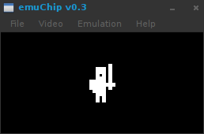
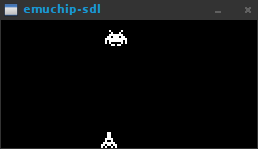

В прошлой статье мы рассмотрели опкоды CHIP-8. Сегодня попробуем написать несколько простых демонстрационных программ для него.
Chipper
Для компиляции исходного кода нам потребуется ассемблер Chipper, автором которого является Hans Christian Egeberg. Скачать можно по ссылке http://www.hpcalc.org/hp48/pc/programming/chipper.zip В архиве лежат 3 файла:
- CHIPPER.EXE - ассемблер для DOS (возможно запустится в Windows. Если нет, то используйте DosBox)
- CHIPPER.DOC - документация в формате txt (а не в doc как указано)
- CHIPPER.C - исходный код программы (пригодится пользователям альтернативных операционных систем)
Для линукса Chipper компилируется следующей командой:
g++ CHIPPER.C -o chipper
Для Arch Linux готовый пакет лежит в AUR.
После этого бинарник для CHIP-8 собирается следующей командой:
chipper ЦЕЛЬ ИСХОДНИК
где ЦЕЛЬ - название файла игры который появится в результате компиляции, далее запускаем его в эмуляторе.
ИСХОДНИК - путь к файлу с исходным кодом игры (здесь можно указать несколько файлов).
Рисуем спрайт на экране
Первая программа будет совсем простой - мы нарисуем спрайт рыцаря в центре экрана. (Спрайт я взял вот с этой страницы).
OPTION BINARY
ALIGN OFF
ld v0,28 ;(4)
ld v1,10 ;(5)
ld I,sprite ;(6)
drw v0,v1,12 ;(7)
loop: ;(9)
jp loop ;(10)
sprite: ;(12)
db $......1. ;(13)
db $..111.1.
db $..111.1.
db $..1.1.1.
db $..111.1.
db $11111.1.
db $11111111
db $11111.1.
db $.1111...
db $..111...
db $..1.1...
db $..1.1... ;(24)Сохраняем данный код в файл с именем sprite.asm и компилируем командой:
chipper sprite.c8 sprite.asm
Запустив sprite.c8 в эмуляторе мы увидим рыцаря.

Теперь разберем код программы построчно. Две первые строчки указывают Chipper’у создавать бинарный файл и не использовать выравнивание. Данные строки будут во всех наших программах.
В строке (4) мы загружаем в регистр V0 число 28, это будет значение координаты X.
В (5) точно так загружаем координату Y в регистр V1.
Строка (6) загружает адрес спрайта в регистр I. Адрес мы указываем в качестве метки sprite: которая находится на (12) строке.
В (7) строке рисуется спрайт по координатам лежащим в регистрах V0 и V1. Высота спрайта равна 12 пикселей (как вы помните из первой статьи, высота спрайта для CHIP-8 может варьироваться от 1 до 15 пикселей, для Super CHIP до 16).
В строках (9) и (10) мы создаем бесконечный цикл, что бы программа не завершилась.
Начиная от (13) и по (24) строку располагаются 12 байт представляющих спрайт рыцаря. Записаны они в двоичном виде(на что указывает символ $), где символ “1” обозначает установленный бит, символ “.” неустановленный (вместо точки можно использовать ноль). Установленные биты рисуются на экране.
Клавиатура, подпрограммы, перерисовка спрайтов
В следующей программе можно перемещать спрайт по экрану используя клавиатуру.
OPTION BINARY
ALIGN OFF
ld v0,28
ld v1,10
ld I,sprite
drw v0,v1,12 ;рисуем спрайт в центре экрана
ld v4, 1 ;регистр v4 будем использовать для изменения координаты на 1 пиксель
loop:
ld v3, 2 ;в регистре v3 сохраняем номер клавиши
sknp v3 ;пропускаем следующую инструкцию если эта клавиша не нажата
call up ;если клавиша оказалась нажата, то вызываем подпрограмму up
ld v3, 8 ;остальное подобно предыдущему блоку
sknp v3
call down
ld v3, 4
sknp v3
call left
ld v3, 6
sknp v3
call right
jp loop
up:
drw v0,v1,12 ;стираем спрайт
sub v1, v4 ;вычисляем новую координату
drw v0,v1,12 ;рисуем спрайт на новом месте
ret ;возвращаемся из подпрограммы в место вызова
down:
drw v0,v1,12 ;подобно функции up
add v1, v4
drw v0,v1,12
ret
left:
drw v0,v1,12
sub v0, v4
drw v0,v1,12
ret
right:
drw v0,v1,12
add v0, v4
drw v0,v1,12
ret
sprite:
db $......1.
db $..111.1.
db $..111.1.
db $..1.1.1.
db $..111.1.
db $11111.1.
db $11111111
db $11111.1.
db $.1111...
db $..111...
db $..1.1...
db $..1.1...Все необходимые комментарии есть в коде программы. Хочу упомянуть лишь о том, что графика на экран выводится методом XOR. Это означает, что если в определенной точке экрана нарисован пиксель, и мы рисуем его в этом же месте снова, то пиксель стирается! Таким образом, что бы стереть спрайт с экрана, нам необходимо нарисовать его еще раз в том же самом месте, что мы и делаем в первой строчке функций up, down, left и right.
Заготовка для небольшой игры
В следующей программе я реализовал небольшую заготовку для игры наподобие Space Invaders. В ней инопланетный захватчик перемещается вправо-влево. Нажимая клавиши 4 и 6 мы так же можем перемещать наш корабль. Но стрелять наш корабль пока не умеет, я думаю вы сможете сами написать код для реализации стрельбы, если захотите.

Я не буду размещать в статье весь код этой программы, посмотреть его вы можете по ссылке http://pastebin.com/HaZYN5j6 В строке (13) мы включаем режим Super CHIP. Спрайт invader’а имеет размер16x16 пикселей(поэтому последний параметр команды drw равен нулю), спрайт корабля 8x8. Для передвижения invader’а мы используем таймер задержки. Когда таймер обнулен, мы сдвигаем спрайт и снова устанавливаем таймер. Изменяя начальное значение таймера можно регулировать скорость перемещения спрайта. Если вы хотите реализовать стрельбу, то помните: что бы определить столкновение двух спрайтов, необходимо проверять регистр VF, при столкновении он будет установлен в 1.
В сегодняшней статье мы не рассмотрели некоторые возможности CHIP-8, наподобие встроенных шрифтов и скроллинга экрана, но в них нет ничего сложного, вы и сами легко в этом разберетесь. Ну, а в следующей статье мы перейдем непосредственно к написанию эмулятора.